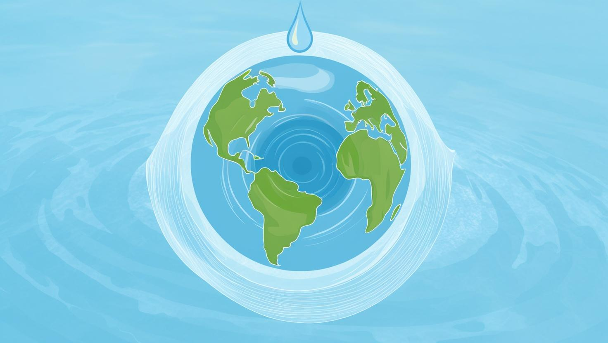
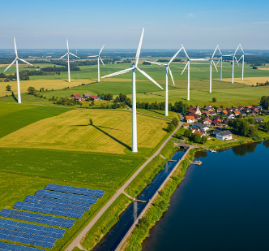
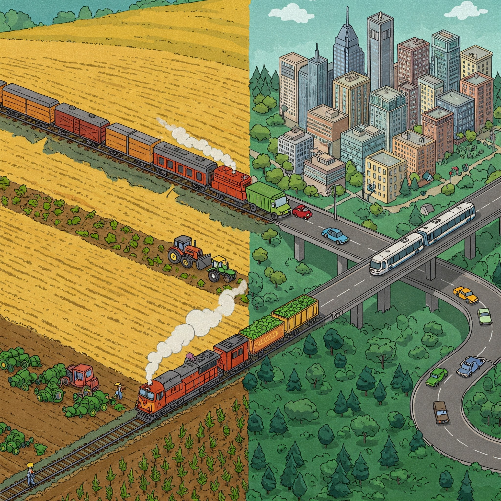

A Essência da Zona Rural
Saiba um pouco mais sobre cada área.

Acessibilidade rural e urbana à água.
Explore a importância da água e as iniciativas para garantir o seu acesso.
Saiba mais sobre


A produção e a industrialização nas cidades
Conheça o processo produtivo rural e a sua conexão com a indústria.
Saiba mais sobre.gif)